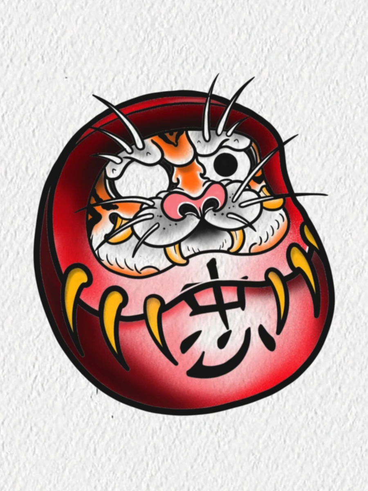
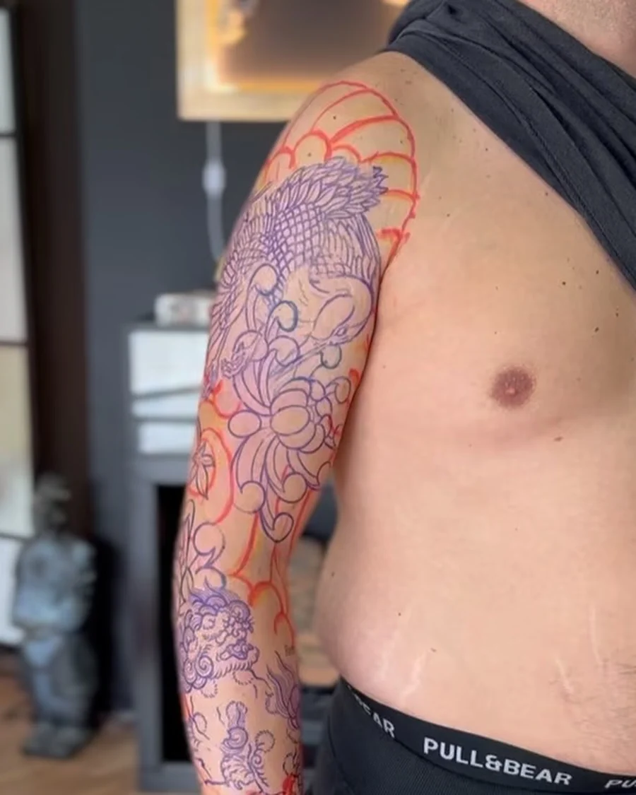
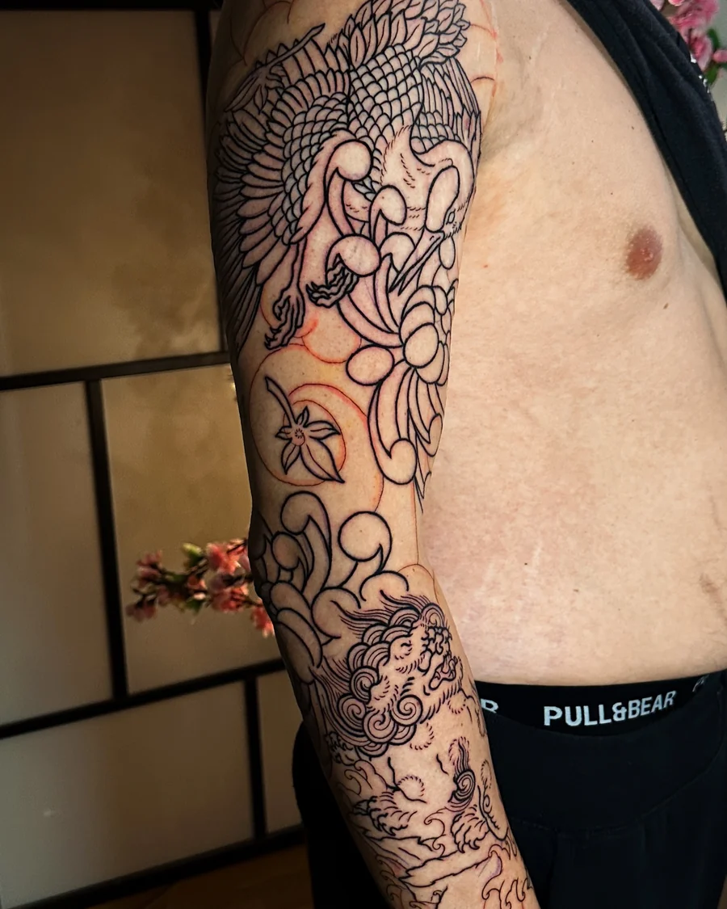
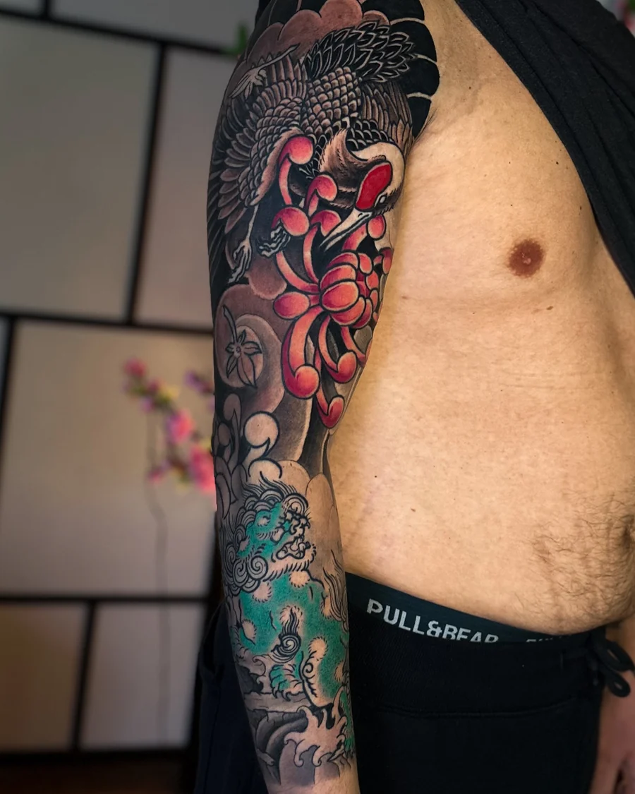
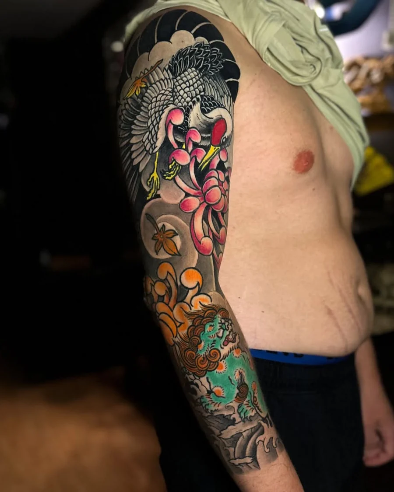
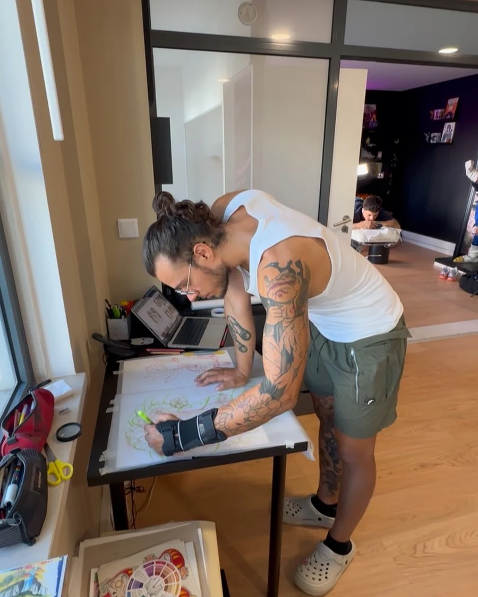

Diogo Teixeira
Tatuagem japonesaIrezumi e freehandA cores ou preto e cinza

Black Tiger Tattoo ShopLoures, LisboaMarcações por DM
Daruma toraFlash disponível
Trabalhos
Mangas, nagasode, costas e peças soltas, quase tudo desenhado de raiz. Toca numa foto para a ver inteira.
Do traço à cor
As peças grandes fazem-se por sessões. Esta nagasode começou em novembro, ficou pronta em março e foi revista já cicatrizada, quatro meses depois.

Desenho no corpo
Freehand com marcador, a seguir o músculo.

Linhas
O traço fechado define a composição toda.

Fundo e cor
Vento, água e nuvens em preto, e depois a cor.

Cicatrizada
Quatro meses depois, com o preto firme.
Disponíveis para tatuar
Flashes e projetos desenhados por mim, à espera de pele. Fazem-se a cores ou a preto e cinza. Escolhe um e o pedido já segue com ele.
Projetos grandes
Pinturas
Fora da pele também pinto. Há prints destas peças, e os desenhos podem ser tatuados. Pergunta por mensagem.
A Pokédex da 1.ª geração
Um desafio à parte: tatuar os 151 Pokémon da primeira geração, cada um com o traço tradicional. Faltam muitos. Queres ser o próximo?

Diogo Teixeira
Comecei a tatuar no fim de 2023 e, desde então, o caderno encheu-se de ryū, koi, hannya, daruma e tora. O desenho japonês é o que me faz sentar à mesa todos os dias.
Durante muito tempo o desenho foi o que mais me deixava inseguro. Hoje boa parte dos projetos nasce em freehand, desenhada à mão diretamente no corpo, para a peça acompanhar o braço, a perna ou as costas de quem a leva.
Tatuo na Black Tiger Tattoo Shop, em Loures. Faço peças a cores ou a preto e cinza, coberturas e reconstrução de mangas antigas.
- 2023
- primeira tatuagem
- Freehand
- desenho no corpo
- Coberturas
- e mangas reconstruídas
- 13 / 151
- Pokémon na Pokédex
Pedir marcação
As marcações são feitas pelo Direct. O Diogo responde com o desenho, o orçamento e a data.
Ideia
Manda uma DM com a ideia, o local e o tamanho. Ou escolhe um flash disponível.
Desenho
Desenho o projeto para ti. Nas peças grandes, à mão livre no próprio corpo.
Sessão
Na Black Tiger, em Loures. Mangas e costas fazem-se por sessões.
Cuidados
Hidratar e proteger do sol. Se for preciso retocar, voltamos a ver.
Flash escolhidoDiz o nome na mensagem.
- A ideia
- Zona do corpo
- Tamanho
- Referências
Tens fotos de referência ou do local? Envia-as na mesma conversa.
Black Tiger Tattoo Shop
- Morada
- R. Sebastião e Silva 9, lote 62
2660-703 Loures - Horário
- Só com marcação
combinada por DM - Marcações
- No Instagram
@diogo_irezumi
Dúvidas
É a minha primeira tatuagem. Tudo bem?
Claro. Diz isso no pedido, explico como corre a sessão e como cuidar da pele depois.
Quanto custa?
Depende do tamanho, do local e do detalhe. Envia a ideia por DM e respondo com o orçamento.
Fazes coberturas?
Faço coberturas e reconstrução de tatuagens antigas. Manda fotos da tatuagem atual, de perto e com boa luz.
Os flashes podem ser adaptados?
Podem mudar de tamanho, passar a preto e cinza e ajustar-se ao sítio do corpo. Cada flash disponível só se tatua uma vez.
Como cuido da tatuagem?
Mantém a pele limpa e hidratada com creme cicatrizante e protege do sol. Explico tudo no fim da sessão.